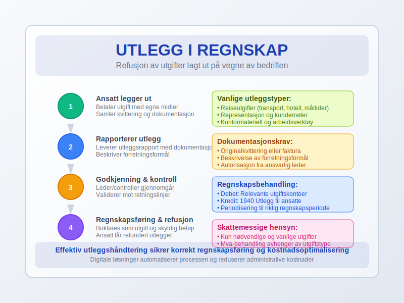
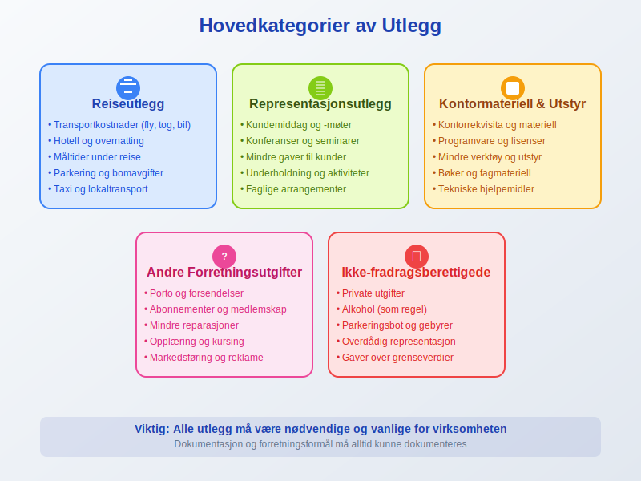
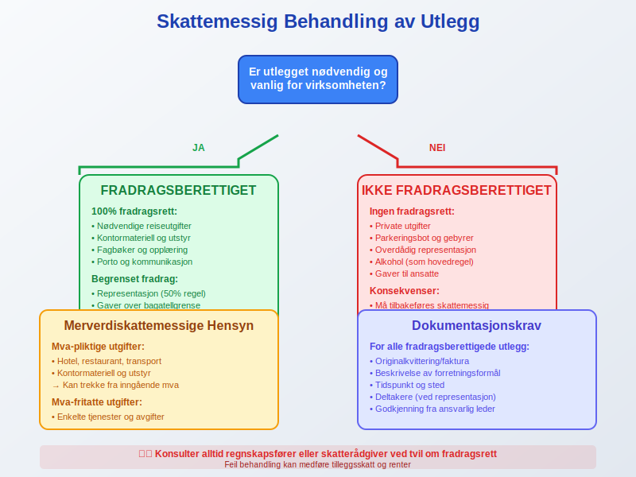
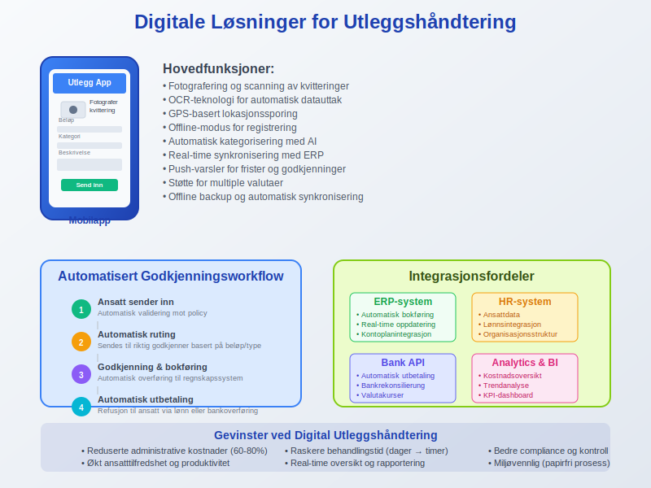
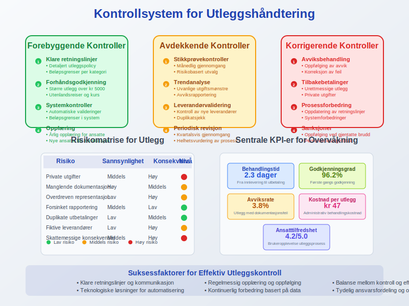
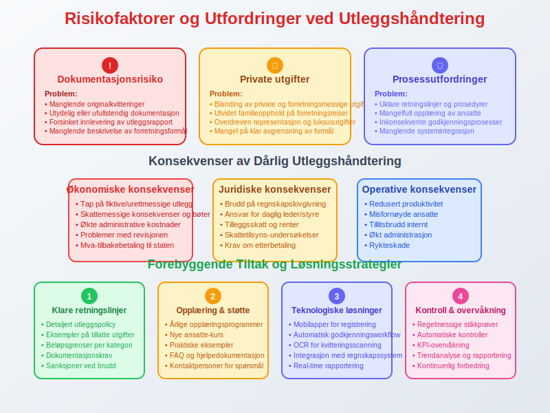
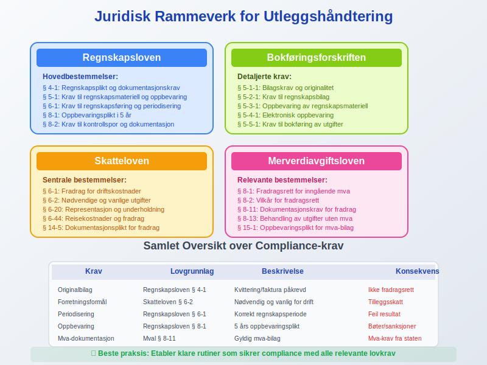
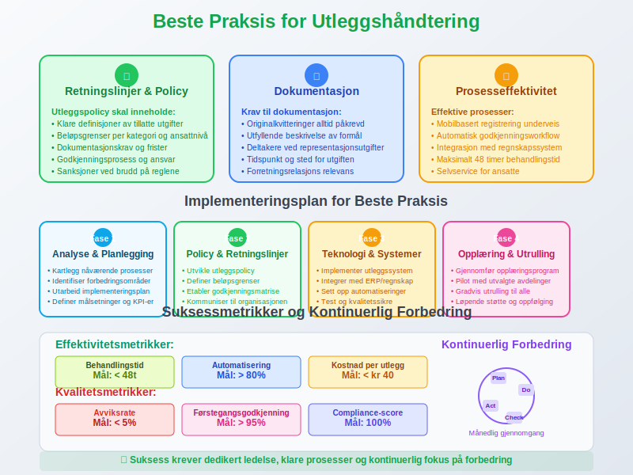
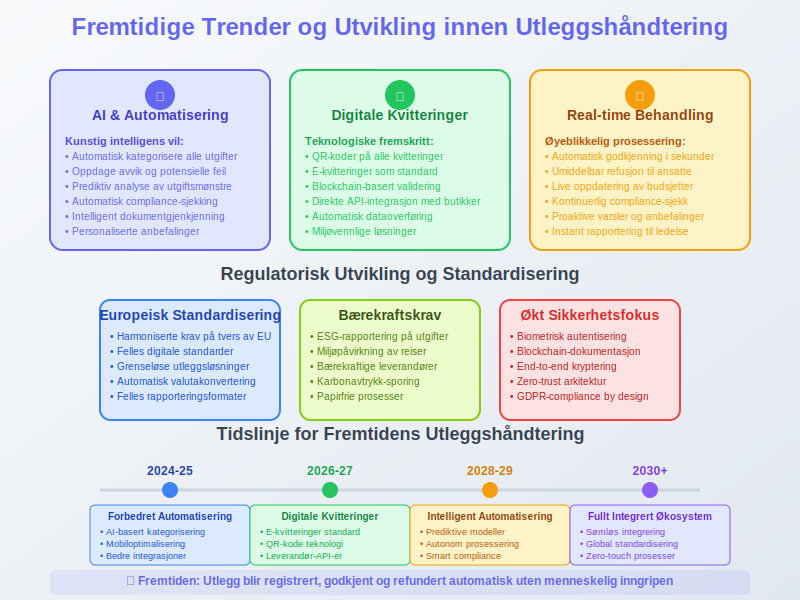

Utlegg er penger som ansatte eller andre forbundne parter legger ut på vegne av et selskap eller en organisasjon, som deretter refunderes av arbeidsgiver. Utlegg kan omfatte alt fra reiseregning for transport- og reiseutlegg (kilometergodtgjørelse dokumenteres gjennom en kjørebok) og representasjonskostnader til innkjøp av kontormateriell og andre driftsrelaterte utgifter. Forståelse av utlegg er essensiell for riktig regnskapsføring og internkontroll i bedrifter.
Les mer om spesifikke ansattutlegg i artikkelen Ansattutlegg, og om refunderbare utlegg for kjøpers regning i kontoplanen på konto 3090 i artikkelen Refunderbare utlegg for kjøpers regning, avgiftspl., for en detaljert gjennomgang av regnskapsføring, dokumentasjonskrav, skattemessige hensyn og beste praksis.

Hva er Utlegg i Regnskapssammenheng?
Utlegg refererer til situasjoner hvor en person betaler utgifter på vegne av en bedrift med egne midler, med forventning om senere refusjon. Dette skiller seg fra direkte bedriftsutgifter som betales direkte fra selskapets kontoer. Utlegg krever særskilt dokumentasjon og behandling i regnskapet for å sikre korrekt rapportering og skattemessig behandling.
Seksjon 1: Typer Utlegg
Utlegg kan kategoriseres i flere hovedtyper, hver med egne regnskapsmessige og skattemessige implikasjoner:

Reiseutlegg
- Transport: Fly, tog, buss, taxi og privatbil
- Opphold: Hotellutgifter, måltider og kost
- Andre reiserelaterte kostnader: Parkering, bomavgifter, bagasjeutgifter
Representasjonsutlegg
- Kundemøter: Måltider og underholdning med kunder
- Konferanser: Utgifter til faglige arrangementer
- Gaver: Mindre gaver til kunder eller samarbeidspartnere
Kontormateriell og Utstyr
- Mindre anskaffelser: Kontorrekvisita og programvare
- Verktøy: Arbeidsrelatert utstyr under bagatellgrensen
Seksjon 2: Regnskapsføring av Utlegg
Korrekt regnskapsføring av utlegg følger spesifikke prinsipper som sikrer transparent og nøyaktig rapportering:

Periodisering og Timing
Utlegg skal periodiseres til den perioden hvor utgiften oppstår, ikke nødvendigvis når refusjonen skjer:
Debet: Relevant utgiftskonto (f.eks. 6000 Reisekostnader)
Kredit: 1940 Utlegg til ansatte
Dokumentasjonskrav
For alle utlegg kreves detaljert dokumentasjon:
- Originalkvitteringer: Alle utlegg må dokumenteres med original kvittering eller faktura
- Forretningsformål: Klar beskrivelse av utgiftens relevans for virksomheten
- Godkjenning: Autorisasjon fra ansvarlig leder eller controller
Seksjon 3: Skattemessige Aspekter
Skattemessig behandling av utlegg avhenger av utgiftens art og omfang:

Fradragsberettigede Utlegg
Utlegg som er nødvendige og vanlige for virksomheten er som regel fradragsberettigede:
| Utgiftstype | Fradragsrett | Dokumentasjon |
|---|---|---|
| Nødvendige reiseutgifter | Full fradragsrett | Kvittering + reiseregning |
| Representasjon (50% regel) | Begrenset fradrag | Kvittering + forretningsformål |
| Kontormateriell | Full fradragsrett | Kvittering + relevans |
| Privatutgifter | Ingen fradragsrett | Ikke aktuelt |
Merverdiskattemessige Hensyn
Utlegg kan ha forskjellige mva-konsekvenser:
- Mva-pliktige utgifter: Bedriften kan trekke fra inngående mva
- Mva-fritatte utgifter: Ingen mva-fradrag
- Blandede utgifter: Må fordeles mellom fradragsberettiget og ikke-fradragsberettiget del
Seksjon 4: Digitale Løsninger for Utleggshåndtering
Moderne bedrifter benytter digitale verktøy for effektiv utleggshåndtering:

Automatisering og Workflow
- Mobilapplikasjoner: For fotografering og registrering av kvitteringer
- Automatisk kategorisering: AI-basert klassifisering av utgifter
- Godkjenningsworkflow: Digitale godkjenningsprosesser
Integrasjon med Regnskapssystemer
Moderne utleggsløsninger integreres direkte med ERP-systemer:
- Automatisk bokføring: Direkte overføring til regnskapssystem
- Kontrollfunksjoner: Automatisk sjekk mot budsjetter og retningslinjer
- Rapportering: Real-time oversikt over utleggsstatus
Seksjon 5: Kontroll og Compliance
Effektiv kontroll av utlegg sikrer både regnskapsmessig korrekthet og kostnadsoptimalisering:

Internkontrollsystemer
- Beløpsgrenser: Definerte grenser for ulike utleggstyper
- Dokumentasjonskrav: Spesifikke krav til kvitteringer og dokumentasjon
- Godkjenningsmatriser: Klare retningslinjer for hvem som kan godkjenne hva
Revisjons- og Kontrolltiltak
- Stikkprøvekontroller: Regelmessig gjennomgang av utleggsrapporter
- Trendanalyser: Identifisering av uvanlige mønstre eller utgifter
- Leverandørvalidering: Kontroll av ekstraordinære utgifter
Seksjon 6: Utfordringer og Fallgruver
Utleggshåndtering kan medføre flere risikofaktorer som bedrifter må være oppmerksom på:

Vanlige Problemer
- Manglende dokumentasjon: Utgifter uten tilstrekkelig dokumentasjon
- Privat/forretningsmessig blanding: Utgifter som delvis er private
- Forsinket rapportering: Utlegg som rapporteres for sent
- Uklare retningslinjer: Mangel på tydelige regler for utlegg
Løsningsstrategier
- Klare retningslinjer: Detaljerte utleggspolicies for ansatte
- Regelmessig opplæring: Kursing i korrekt utleggshåndtering
- Teknologiske løsninger: Investering i moderne utleggssystemer
Seksjon 7: Juridiske og Regulatoriske Aspekter
Utleggshåndtering må følge norsk lovgivning og regnskapsstandarder:

Regnskapsloven og Bokføringsforskriften
- Dokumentasjonsplikt: Alle utlegg må dokumenteres i henhold til regnskapsloven
- Oppbevaringsplikt: Kvitteringer og dokumentasjon må oppbevares i minst 5 år
- Kontrollspor: Klar sammenheng mellom utlegg og regnskapsføring
Arbeidsrettslige Hensyn
- Arbeidsavtaler: Utleggsregler bør inkluderes i arbeidskontrakter.
- Refusjonsfrister: Klare frister for utleggsrapportering og refusjon
- Rimelighetsvurderinger: Utlegg må være rimelige og nødvendige
Seksjon 8: Beste Praksis for Utleggshåndtering
Implementering av beste praksis sikrer effektiv og compliant utleggshåndtering:

Retningslinjer for Ansatte
- Forhåndsgodkjenning: Større utlegg bør godkjennes på forhånd
- Kvitteringsrutiner: Umiddelbar fotografering og lagring av kvitteringer
- Månedlig rapportering: Regelmessig innlevering av utleggsrapporter
Organisatoriske Tiltak
- Sentral koordinering: Dedikert ansvarlig for utleggshåndtering
- Systemer og verktøy: Investering i passende teknologiske løsninger
- Kontinuerlig forbedring: Regelmessig evaluering og oppdatering av prosesser
Seksjon 9: Fremtidige Trender og Utvikling
Utleggshåndtering utvikler seg kontinuerlig med teknologiske fremskritt:

Teknologiske Innovasjoner
- Kunstig intelligens: Automatisk kategorisering og validering av utgifter
- Blockchain: Sikker og transparent dokumentasjon av transaksjoner
- Mobil teknologi: Forbedrede mobilløsninger for real-time registrering
Regulatoriske Endringer
- Digitalisering: Økt fokus på digitale kvitteringer og dokumentasjon
- Miljøhensyn: Redusert papirbruk og miljøvennlige løsninger
- Internasjonalisering: Standardisering på tvers av landegrenser
Konklusjon
Utlegg representerer en viktig del av bedrifters økonomiske forvaltning som krever systematisk tilnærming og grundig kontroll. Ved å implementere klare retningslinjer, moderne teknologiske løsninger og robuste kontrollsystemer kan bedrifter sikre både regnskapsmessig korrekthet og kostnadseffektivitet. Forståelse av utleggets ulike dimensjoner - fra grunnleggende definisjon til komplekse skattemessige implikasjoner - er avgjørende for å opprettholde god regnskapsskikk og ensure compliance med norske regnskapsregler.
Effektiv utleggshåndtering bidrar ikke bare til nøyaktig regnskapsføring, men også til bedre kostnadskontroll og økt ansvarsstyring i organisasjonen. Gjennom kontinuerlig forbedring og tilpasning til nye teknologiske muligheter kan bedrifter optimalisere sine utleggsprosesser og skape betydelig verdi for organisasjonen.